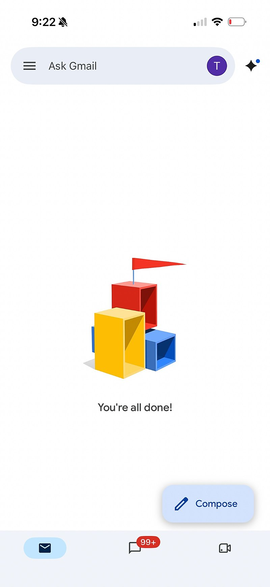
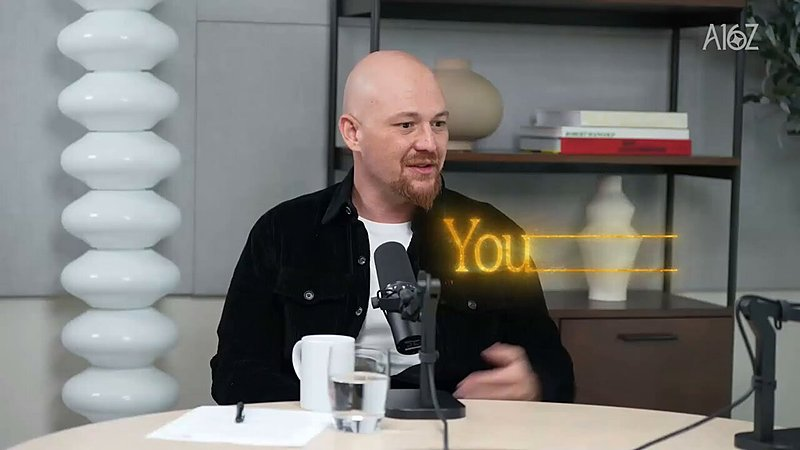

AI 日报 · 10月5日
让 Agent 更好用：简化入口，按任务分工
Builder 们讨论 Agent 产品的复杂入口与企业工作流重构；a16z 对话聚焦专用模型和路由。Replit 分享由主 Agent 自主决定委派的设计，OpenAI 更新金融功能的开放范围。
Agent 产品
模型分工
工作流
GitHub Trending
7
Builder 动态
5
今日上榜项目
2
官方资料
1
公开视频
今日要点
OpenAI 的 Thibault Sottiaux 说，团队目前优先做简化、效率、突破性功能与新模型；他表示用户反馈明确希望产品更简单。这是产品方向表态，尚非具体功能发布。
a16z 对话中，OpenRouter 的 Alex Atallah 和 Replit 的 Amjad Masad 讨论专用模型组合与企业自主性；Replit 官方文章则说明其主 Agent 会按任务决定何时、向谁委派。两者都是受访者或厂商的设计主张。
深度对话
a16z：专用模型如何协作
a16z 10 月 3 日公开视频，由 Erik Torenberg 对话 Alex Atallah 与 Amjad Masad。以下是嘉宾观点的归纳，不将成本或能力预测当作已证实的行业结论。
任务决定模型
嘉宾主张保留不同训练路线和能力侧重的模型，按任务选择或组合，而非预设一个模型处理所有工作。
企业需要保留选择权
对话讨论企业如何在模型、云与数据层保持可替换性，以免关键工作流完全依附于单一供应商。
分工也带来协调成本
多模型和多 Agent 方案需要路由、通信、权限与安全边界；成本和效果仍应在具体任务上测试。
资讯精选
官方产品与工程资料
Builder 动态
一线实践与判断
Thibault Sottiaux｜从复杂功能回到简单入口
Sottiaux 说团队收到的反馈是产品需要更简单。他还展示自己让 dot 协助处理积压邮件：批量确认清理、分类，再逐项准备回复。这是个人使用记录，不代表自动化可以跳过人工确认。

Aaron Levie｜知识工作需重做流程
Levie 认为 Agent 在编码任务中使用更深，在其他知识工作中仍处早期。要扩大采用，组织需要重做流程、连接数据，并明确决策责任与治理；他提出的增长倍数是个人预测。
Madhu Guru｜产品复杂度影响 AI 采用
Guru 认为连接器、权限、模型选择和 token 用量等设置堆叠，使很多 AI 产品像复杂仪表盘。帖子中的付费比例未经这里独立核验，因此只保留其产品设计判断。
Amjad Masad｜分享模型分工对话
Masad 转发他与 OpenRouter 联合创始人 Alex Atallah 的 a16z 对话，讨论专用模型、路由和企业对模型供应的选择权。

Guillermo Rauch｜安全也是验证工程
Rauch 认为软件公司的安全工作会扩大，既要验证代码和系统的性质，也要决定把有限检查资源投向哪些攻击面。这是其行业判断。
Ryo Lu｜AI 时代仍需产品视角
Ryo Lu 反思产品互相模仿导致设计趋同；生成工具降低制作门槛后，创作者仍需决定作品要表达什么、让用户如何感受。
Sam Altman｜保留人的判断
Altman 反对把宗教式权威赋予 AI 模型，或向模型交出人的判断，并将此视为安全问题。帖子表达的是原则立场，没有提出新的产品规则。
GitHub Trending
今日上榜项目


根据 10 月 5 日 GitHub Trending 实时榜单整理；星标、分叉数来自本次 GitHub API 快照，数字和排名会变化。
今日思考
用户希望少做入口选择，工程团队却必须处理模型分工、权限、数据连接和验证。今天的原帖与视频指向同一取舍：系统内部可以灵活调度，但交给用户的动作和责任边界要清楚。
参考来源
a16z｜专用模型对话原视频
Replit｜让模型决定委派的工程设计
OpenAI｜ChatGPT 更新记录
Thibault Sottiaux｜简化产品方向
Thibault Sottiaux｜邮件实践
Thibault Sottiaux｜邮件处理步骤
Aaron Levie｜Agent 采用观察
Madhu Guru｜产品复杂度
Amjad Masad｜访谈原帖
Guillermo Rauch｜安全与验证
Ryo Lu｜产品视角
Sam Altman｜人的判断
GitHub｜10 月 5 日 Trending
tester-army/e2e
pbakaus/impeccable
coreyhaines31/marketingskills
DietrichGebert/ponytail
earthtojake/text-to-cad